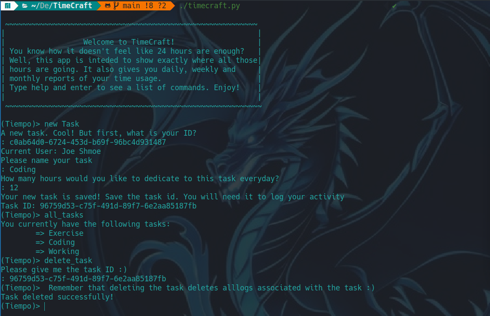
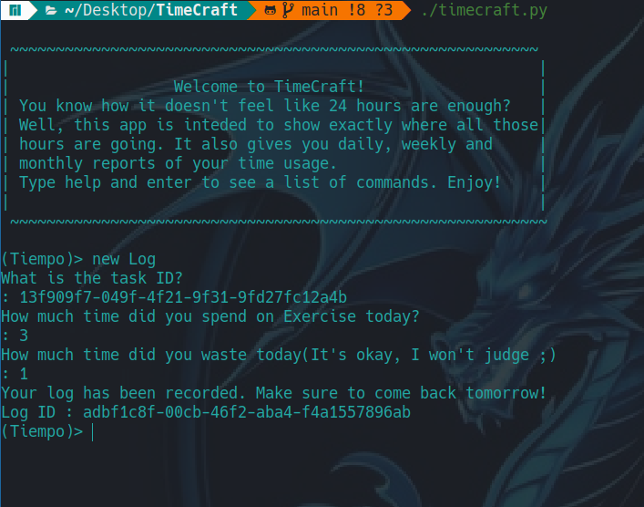
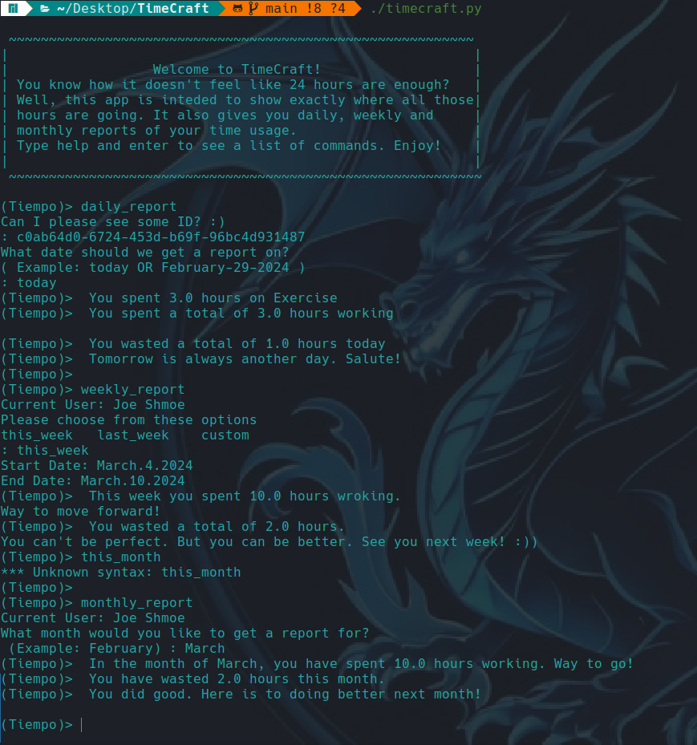
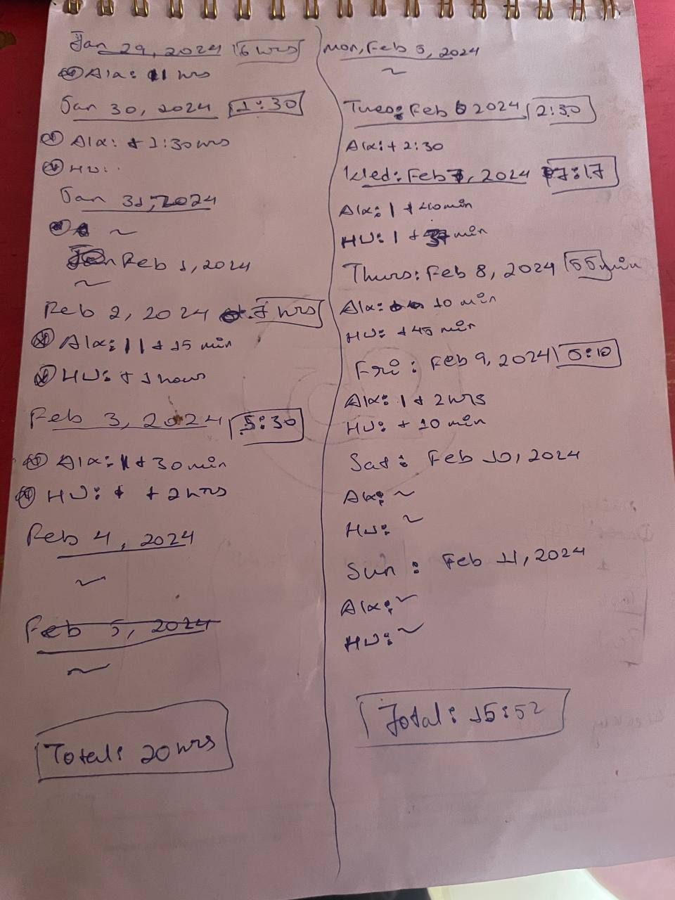

Find out where all those hours seem to go missing
Features:
- Create and manage tasks with ease. 
- Log time spent on each task, including productive and wasted time. 
- Generate comprehensive reports to gain insights into your work habits and identify areas for improvement. 
How this app came to be
This app is a product of my obsession with tracking my time. I wanted to know exactly how much time I was working for and how much time I was knowingly and unhnowingly wasting on a daily basis.
Image: Proof of my obssesion
And so TimeCraft was born. It can handle multiple users, keep track of multiple tasks for a user.
It can also give you daily, weekly and monthly reports.
Here are my socials:
Check out the code on Github